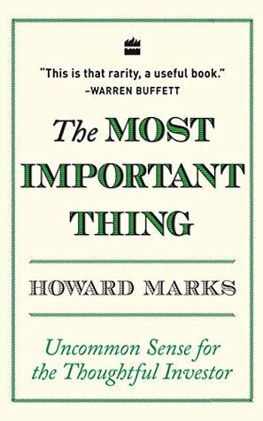
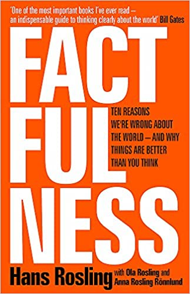
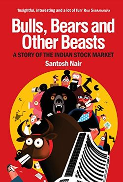
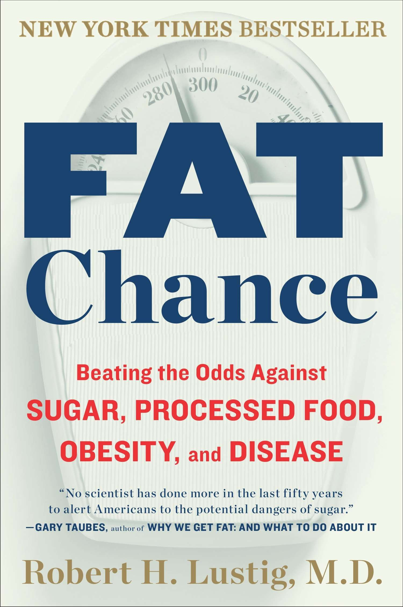
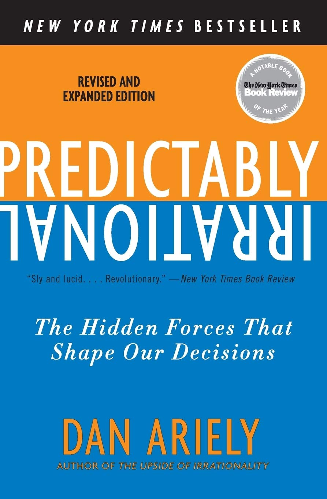
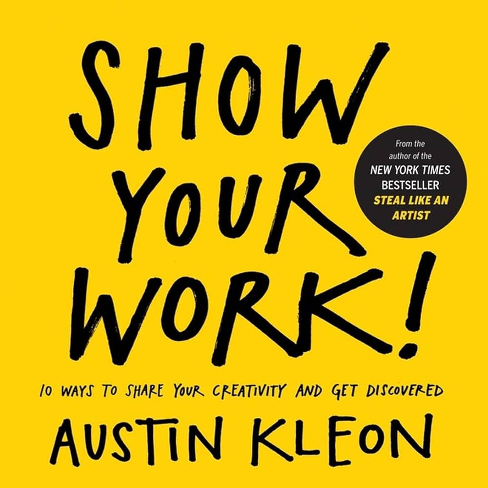
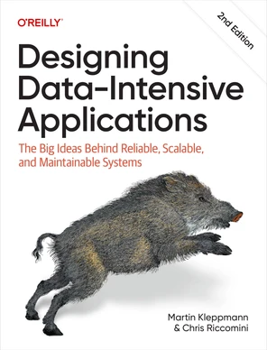

The notes & highlights from the books are consolidated here.
Some of the books are huge (like textbooks), their chapters are arranged as individual files. The non-fictions in most cases are available as single file.
The Psychology of Money

The Most Important Thing: Uncommon Sense for The Thoughtful Investor

Factfulness: Ten Reasons We're Wrong About The World - And Why Things Are Better Than You Think
Why We Sleep: Unlocking the Power of Sleep and Dreams

Bulls, Bears & Other Beasts

Fat Chance
One Up on Wall Street
The Behavioral Investor

Predictably Irrational
11. 80/20 Your Life! How to Get More Done With Less Effort and Change Your Life in the Process!

Show Your Work! 10 Ways to Share Your Creativity and Get Discovered
The Science of Stock Market Investment - Practical Guide to Intelligent Investors

Designing Data-Intensive Applications